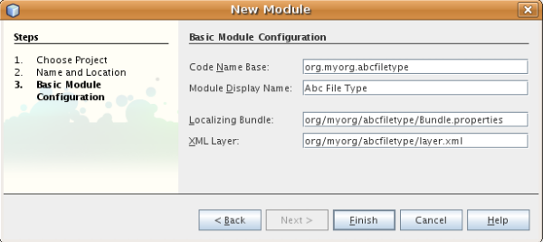

Apache NetBeans
Apache NetBeansLatest release
ファイル�?�種類統�?��?��?ュートリアル
| This tutorial needs a review. You can edit it in GitHub following these contribution guidelines. |
�?��?��?ュートリアル�?��?��?IDE �?��?��?� NetBeans プラットフォーム上�?�構築�?�れ�?��??�?�他�?�アプリケーション�?��?新�?��?�ファイル�?�種類を�?識�?��?�るモジュールを作�?�?�る方法を示�?��?��?�。
�?��?��?ュートリアルを行�?��?��?��?次�?�表�?�示�?�ソフトウェア�?�よ�?�リソース�?�必�?�?��?�。
| ソフトウェア�?��?��?�リソース | 必須�?ージョン |
|---|---|
NetBeans IDE |
version 6.1 �?��?��?� version 6.0 |
Java Developer Kit (JDK) |
version 6 �?��?��?� version 5 |
ファイル�?�種類統�?��?��?��?��?�
IDE �?��?識�?�れるファイル�?�種類�?��?��?独自�?�アイコン�?メニュー項目�?�?�よ�?�動作�?��?�り�?��?�。表示�?�れる「ファイル�?�?� FileObjects �?��?�り�? java.io.File �?�ラッパー�?��?構�?ファイル�?�場�?��?�通常�?モジュール�?� XML ファイル内�?��?��?�?��?��?�方法�?��?存�?�れ�?�データ�?�ラッパー�?��?�。実際�?�表示�?�れ�?��?�るも�?��?� Nodes �?��?アクション�?�よ�?��?�機能や�?ファイル�?��?��?�オブジェクト�?�ローカライズ�?�れ�?��??�?を�??供�?��?��?�。 Nodes �?� FileObjects �?�間�?��?� DataObjects �?��?�り�?��?�。 DataObject �?� FileObject �?�似�?��?��?��?��?��?�?��?�種類�?�ファイル�?�表示�?�れる�?��?��?�?�り�?��?�ん。通常�?異�?�る拡張�?を�?�?�ファイル�?�異�?�る�??�?空間を�?�?� XML ファイル�?�対�?��?��?異�?�る種類�?� DataObject �?��?�り�?��?�。�?� DataObject �?�異�?�るモジュール�?�よ�?��?��??供�?�れ�?��?�。�?�実装�?��?1 �?�以上�?�ファイル�?�種類をサ�?ート�?��?��?�。�?��?��?��?��?画�?モジュール�?� .gif ファイル�?�よ�?� .png ファイルを�?識�?��?開�??�?��?��?��?��??�?��?�。
ファイル�?�種類を�?識�?�るモジュール�?��? DataLoader (ファイル�?�種類�?�固有�?� DataObject 用�?�ファクトリ) をインストール�?��?��?�。フォルダを展開�?�る�?��?IDE �?��?�既存�?� DataLoader �?�「�?�れ�?�何�?��?�?�り�?��?��?� ?�?�?��?�?��?��?�?��?��?�。最�?�?�「�?��?��?�?�答�?��?� DataLoader �?��?ファイル�?� DataObject を作�?�?��?��?�。�?�ファイル�?�何�?�を実際�?�表示�?�る�?��?�?��?システム�?��?� DataObject �?�対�?��?� DataObject.getNodeDelegate() を呼�?�出�?��?��? Nodes �?� IDE �?�実際�?�表示�?�れるも�?��?��?�り�?��?�。
次�?�左�?��?�図�?��?�?述�?��?�項目を示�?��?��?��?��?�。

�?��?��?ュートリアル�?��?��?架空�?�ファイル「Abc�? (ファイル拡張�?�?� .abc ) �?��? DataLoader をインストール�?�るモジュールを作�?�?��?��?�。デフォルト�?��?「abc�?拡張�?を�?�?�ファイル�?��?IDE �?��?識�?��?��?��??�?�他�?�ファイル�?��?��?�扱�?れ�?��?�。�?�れ�?�テキストファイル�?��?��?�扱�?れる�?��?�?IDE �?�テキストファイル�?�場�?��?��?�様�?�機能を�?Abc ファイル�?��??供�?��?��?�。モジュールを作�?�?�る�?��?Abc ファイル�?��?��?�利用�?��??る機能を拡張�?�る方法�?�表示�?�れ�?��?�。開発サイクル�?�完了�?�る�?��?�?��?��?�人�?��??�?�モジュールを簡�?��?�使用�?��?�る�?��?��?��?��??�?��?�。IDE �?��?��?�?��?��?�人�?��?信�?��??る�?イナリを作�?�?��??�?��?�。�?��?��?�人�?��?アップデートセンター�?�ら�??れをインストール�?��??�?��?�。
モジュールプロジェクト�?�作�?
�?��?�節�?��?��?ウィザードを使用�?��?��?�?� NetBeans モジュール�?�必�?�?��?�るソース�?�構造を作�?�?��?��?�。ソース�?�構造�?��?特定�?�場所�?��?�る特定�?�フォルダ�?��?常�?�必�?�?�ファイル�?�セット�?�構�?�?�れ�?��?�。�?��?��?��?��?�?��?��?��?� NetBeans モジュール�?��?��?プロジェクト�?�メタデータを�?存�?�る「nbproject�?フォルダ�?��?ツール�?ーボタンやウィンドウ�?��?��?�項目を宣言登録�?�る�?��?�?� layer.xml ファイル�?�必�?�?��?�。
-
「ファイル�?>「新�?プロジェクト�?(Ctrl-Shift-N) を�?�択�?��?��?�。「カテゴリ�?�?�「NetBeans モジュール�?を�?�択�?��?��?�。「プロジェクト�?�?�「モジュール�?を�?�択�?��?「次�?��?をクリック�?��?��?�。
-
「�??�?�?�場所�?パ�?ル�?��?「プロジェクト�??�?�?�「
AbcFileType�?�?�入力�?��?��?�。「プロジェクト�?�場所�?を�?c:\mymodules�?��?��?�コンピュータ上�?�任�?�?�ディレクトリ�?�変更�?��?��?�。「スタンドアロンモジュール�?ラジオボタン�?��?�択�?��?��?��?��?��?��?��?��??�?��?�。パ�?ル�?�次�?�よ�?��?��?�り�?��?�。

「次�?��?をクリック�?��?��?�。
-
「基本モジュール構�?�?パ�?ル�?��?「コード�??ベース�?�?�
yourorghereをmyorg�?�置�??�?��?��?コード�??ベース全体をorg.myorg.abcfiletype�?��?��?��?�。デフォルト�?�モジュール表示�??�?�空白文字を追加�?��?Abc File Type�?�変更�?��?��?�。「ローカライズ版�?ンドル�?�?�「XML レイヤー�?�?�場所�?��??�?��?��?��?��?��?��?��??�?��?�。�?�れら�?�org/myorg/abcfiletype�?��?��?��??�?�?�パッケージ�?�格�?�?�れ�?��?�。パ�?ル�?�次�?�よ�?��?��?�り�?��?�。

-
「完了�?をクリック�?��?��?�。
IDE �?�よ�?��?� Abc File Type プロジェクト�?�作�?�?�れ�?��?�。�?��?�プロジェクト�?��?��?ソースや�?プロジェクト�?� Ant 構築スクリプト�?��?��?�プロジェクトメタデータ�?��?��?��?��?��?�れ�?��?�。IDE �?�プロジェクト�?�開�??�?��?�。「プロジェクト�?ウィンドウ (Ctrl-1) �?��?プロジェクト�?�論�?�構造を表示�?��??�?��?�。�?��?��?「ファイル�?ウィンドウ (Ctrl-2) �?��?プロジェクト�?�ファイル構造を表示�?��??�?��?�。�?��?��?��?��?「プロジェクト�?ウィンドウ�?�次�?�よ�?��?�表示�?�れ�?��?�。

Abc ファイル�?��?識
�?��?�節�?��?��?ウィザードを使用�?��?��?Abc ファイル�?��?��?��?��?��?��?��?�ファイル�?��?�異�?�る�?��?�を�?識�?�る�?��?�?�必�?�?�クラスを作�?�?��?��?�。�?��?��?ュートリアル�?�最�?�?�説明�?��?��?��?�り�?�?�れを行�?��?��?��?データオブジェクト�?�データローダー�?��?��?��?��?MIME タイプリゾル�?�?� layer.xml ファイル�?�登録エントリ�?�必�?�?��?�。「新�?ファイル�?�種類�?ウィザード�?�よ�?��?��??れら�?��?��?��?�作�?�?�れ�?��?�。
-
プロジェクトノードを�?�クリック�?��?「新�?�?>「ファイル�?�種類�?を�?�択�?��?��?�。
-
「ファイル�?��?識�?パ�?ル�?��?次を行�?��?��?�。
-
MIME タイプ�?�編集ボックス�?�「
text/x-abc�?�?�入力�?��?��?�。 -
ファイル�??�?�拡張�?�?�編集ボックス�?�「
.abc .ABC�?�?�入力�?��?��?�。
-
�?�れ�?��?「ファイル�?��?識�?パ�?ル�?�次�?�よ�?��?��?�り�?��?�。

「ファイル�?��?識�?パ�?ル�?��?��?次�?�フィールド�?��?�り�?��?�。
-
*MIME タイプ。*データオブジェクト�?�一�?�?� MIME タイプを指定�?��?��?�。
-
�?識方法
-
*ファイル�??�?�拡張�?。*1 �?��?��?��?�複数�?�ファイル拡張�?を指定�?��?��?指定�?� MIME タイプ�?�属�?�る�?��?�を IDE �?��?識�?��?��?��?�。任�?�?��?ファイル拡張�?�?��?�?�ピリオドを 1 �?�付�?�る�?��?��?��?��??�?��?�。区切り文字�?�コンマ�?�空白文字�?�?��?��?��??�?�両方�?��?�。�?��?��?��?��?��?次�?�拡張�?�?��?��?��?�有効�?��?�。
-
.abc,.def -
.abc .def -
abc def -
abc,.def ghi, .wow
Abc ファイル�?�大文字�?文字を区別�?�る�?��?��?��?�。�??�?�場�?��?�?��?��?ュートリアル�?��?� 2 �?��?� MIME タイプ�? .abc �?� .ABC を指定�?��?��?�。
-
*XML �?�ルート�?素。*一�?�?��??�?空間を指定�?��?��?XML ファイル�?�種類を�?��?��?��?��?��?��?� XML ファイル�?�種類�?�区別�?��?��?�。多�??�?� XML ファイル�?��?��?�拡張�? (
xml) を�?�?��?��?��?IDE �?��??�?� XML ルート�?素を使用�?��?� XML ファイルを区別�?��?��?�。�?�ら�?�具体的�?�言�?��?��?IDE �?��??�?空間�?� XML ファイル�?�最�?�?� XML �?素を区別�?��??�?��?�。�?�れを使用�?�る�?��?�?��?��?��?��?JBoss �?備記述�?�?� WebLogic �?備記述�?を区別�?��??�?��?�。�?��?�区別を行�?��?��?JBoss �?備記述�?�?�コンテキストメニュー�?�追加�?��?�メニュー項目�?��?WebLogic �?備記述�?�?�使用�?��??�?��??�?�り�?��?�。例�?��?��?��?��?��? NetBeans コン�?ー�?ントパレットモジュール�?��?ュートリアルを�?�照�?��?��??�?��?��?�。
「次�?��?をクリック�?��?��?�。
-
「�??�?�?�場所�?パ�?ル�?��?「クラス�??�?�接頭辞�?�?�「
Abc�?�?�入力�?��?次�?�示�?�よ�?��?��?任�?�?� 16x16 ピクセル�?�画�?ファイルを新�?��?�ファイル�?�種類�?�アイコン�?��?��?��?�照�?��?��?�。

*注: *任�?�?�アイコンを使用�?��??�?��?�。必�?�?�応�?��?��?�?��?�アイコン image::images/filetype_Datasource.gif[] をクリック�?��?�ローカル�?��?存�?��?�?述�?�ウィザード�?�手順�?�指定�?��??�?��?�。
-
「完了�?をクリック�?��?��?�。
「プロジェクト�?ウィンドウ�?�次�?�よ�?��?��?�り�?��?�。

新�?��??生�?�?�れ�?��?�ファイル�?��?��?��?�簡�?��?�説明�?��?��?�。
-
AbcDataLoader.java。
text/x-abcMIME タイプを�?識�?��?��?�。AbcDataObject.java�?�ファクトリ�?��?��?�機能�?��?��?�。詳細�?��?��?��?��?��? What is a DataLoader? を�?�照�?��?��??�?��?��?�。 -
AbcResolver.xml。
.abc�?�よ�?�.ABC�?�拡張�?を MIME タイプ�?�マップ�?��?��?�。AbcDataLoader�?� MIME タイプ�?��?�を�?識�?��?ファイル拡張�?�?��?��?��?��?��?識�?��?��?�ん。 -
AbcDataObject.java。
FileObjectをラップ�?��?��?�。DataObjects �?� DataLoaders �?�よ�?��?�生�?�?�れ�?��?�。詳細�?��?��?��?��?��? What is a DataObject? を�?�照�?��?��??�?��?��?�。 -
*AbcDataNode.java。*アクション�?�よ�?��?�機能�?アイコン�?�?�よ�?�ローカライズ�?�れ�?��??�?�?��?��?IDE �?��?�_表示_方法を�??供�?��?��?�。
-
AbcDataLoaderBeanInfo.java。「オプション�?ウィンドウ�?�「オブジェクト�?�種類�?セクション�?��?ローダー�?�外観を制御�?��?��?�。
Abc ファイル�?�機能�?�作�?
�?�れ�?��?NetBeans プラットフォーム�?��?Abc ファイル�?��?��?��?�種類�?��?��?��?��?�ファイルを区別�?��??るよ�?��?��?�り�?��?��?�。次�?��?�?�れら�?�種類�?�ファイル�?�特有�?�機能を追加�?��?��?�。�?��?�節�?��?��?「プロジェクト�?ウィンドウ�?��?��?�エクスプローラウィンドウ�?��?ファイル�?�ノードを�?�クリック�?��?�コンテキストメニュー�?�メニュー項目を追加�?��?��?�。�?��?��?ファイルをエディタ�?��?��?��??ウィンドウ�?�開�?�るよ�?��?��?��?��?�。
アクション�?�追加
�?��?�サブセクション�?��?��?「新�?アクション�?ウィザードを使用�?��?��?ファイル�?�種類�?�アクションを実行�?�る Java クラスを作�?�?��?��?�。�?��?�ウィザード�?��?��?エクスプローラウィンドウ�?��?�るファイル�?�種類�?�ノード�?��?�?�クリック�?�コンテキストメニュー�?�ら呼�?�出�?��?��??るよ�?��?��?クラスを layer.xml ファイル�?�登録�?��?��?�。
-
プロジェクトノードを�?�クリック�?��?「新�?�?>「アクション�?を�?�択�?��?��?�。
-
「アクション�?�種類�?パ�?ル�?��?「�?�件付�??�?�有効�?をクリック�?��?��?�。次�?�示�?�よ�?��?��?�?�?�「新�?ファイル�?�種類�?ウィザード�?�生�?�?��?�データオブジェクト�?��??�?
AbcDataObjectを入力�?��?��?�。

「次�?��?をクリック�?��?��?�。
-
「GUI 登録�?パ�?ル�?��?「カテゴリ�?ドロップダウンリスト�?�ら「編集�?カテゴリを�?�択�?��?��?�。「カテゴリ�?ドロップダウンリスト�?��?IDE �?�キーボードショートカットエディタ�?�アクション�?�表示�?�れる場所を制御�?��?��?�。
次�?��?「大域メニュー項目�?を�?�択解除�?��?�「ファイル�?�種類�?�メニュー項目�?を�?�択�?��?��?�。「内容�?�種類�?ドロップダウンリスト�?��?次�?�示�?�よ�?��?��?「新�?ファイル�?�種類�?ウィザード�?��?�?�指定�?��?� MIME タイプを�?�択�?��?��?�。

メニュー項目�?��?置�?�設定�?�能�?��?�??�?�メニュー項目を�?後�?�項目�?�ら離�?��?��?��?��?��??�?��?�。「次�?��?をクリック�?��?��?�。
-
「�??�?�?�場所�?パ�?ル�?��?「クラス�??�?�?�「
MyAction�?�?�入力�?��?「表示�??�?�?�「MyAction�?�?�入力�?��?��?�。コンテキストメニュー�?��?�るメニュー項目�?��?��?アイコン�?�表示�?�れ�?��?�ん。�?��?��?��?��?��?「完了�?をクリック�?�る�?�org.myorg.abcfiletypeパッケージ�?�MyAction.java�?�追加�?�れ�?��?�。
-
ソースエディタ�?��?アクション�?�
performActionメソッド�?��?��??�?��?��?�コードを追加�?��?��?�。
protected void performAction(Node[] activatedNodes) {
AbcDataObject d = (AbcDataObject) activatedNodes[0].getCookie(AbcDataObject.class);
FileObject f = d.getPrimaryFile();
String displayName = FileUtil.getFileDisplayName(f);
String msg = "I am " + displayName + ". Hear me roar!";
NotifyDescriptor nd = new NotifyDescriptor.Message(msg);
DialogDisplayer.getDefault().notify(nd);
}Ctrl-Shift-I キーを押�?��?��?�。IDE �?�よ�?��?��?イン�?ート文�?�クラス�?�先頭�?�自動�?�追加�?�れ�?��?�。一部�?�コード�?��?��?�?��?�赤�?�下線�?�付�?��?��?��?��?�。�?�れ�?��?クラスパス�?�必�?�?�パッケージ�?��?��?��?��?��?��?��?��?�を示�?��?��?��?��?�。プロジェクトノードを�?�クリック�?��?�「プロパティー�?を�?�択�?��?「プロジェクトプロパティー�?ダイアログ�?�「ライブラリ�?をクリック�?��?��?�。「ライブラリ�?区画�?�上部�?��?�る「追加�?をクリック�?��?「ダイアログ API�?を追加�?��?��?�。
``MyAction.java`` クラス�?��?も�?�一度 Ctrl-Shift-I キーを押�?��?��?�。 IDE �?�ダイアログ API �?�必�?�?�パッケージを検出�?��?��?��?�?赤�?�下線�?�消�?��?��?�。
-
「�?�?�?�ファイル�?ノード�?��?「XML レイヤー�?を展開�?��?��?�。「
<�?��?�レイヤー>�?�?�「<コンテキスト内�?��?��?�レイヤー>�?�?� 2 �?��?�ノード�?��?�??れら�?�サブノード�?��? System ファイルシステムブラウザを構�?�?��?��?�。「<�?��?�レイヤー>�?�?「Loaders�?を順�?�展開�?��?�?�?�作�?�?��?�「Action�?�?�表示�?�れる�?��?�ノードを展開�?��?��?�。
-
My Actionをドラッグ＆ドロップ�?�る�?��?次�?�示�?�よ�?��?��?開�??アクション�?�下�?�表示�?�れ�?��?�。

最後�?� 2 �?��?�手順�?�ら分�?�る�?��?�り�?System ファイルシステムブラウザ�?��?System ファイルシステム�?�登録�?�れ�?��?�る項目�?�順�?を�?��?�や�??�?編�?�?�る�?��?�使用�?��??�?��?�。
ファイルをウィンドウ�?�開�??
デフォルト�?��?��?�?��?��?ュートリアル�?�定義�?��?�種類�?�ファイルを開�??�?��?�??�?�ファイル�?�基本�?�エディタ�?�開�??�?��?�。�?��?��?��?ファイル�?�視覚表�?�を作�?�?��?��?�場�?��?��?�り�?��?�。ユーザー�?�ウィジェットをドラッグ�?��?�視覚表�?��?�ドロップ�?��?��?�。�?��?�よ�?��?�ユーザーインタフェースを作�?�?�る最�?�?�手順�?��?��?��?ユーザー�?�ファイルをウィンドウ�?�開�??�?��?�。�?��?�サブセクション�?��??�?�方法を説明�?��?��?�。
-
「ウィンドウコン�?ー�?ント�?ウィザードを使用�?��?� AbcTopComponent �?��?��?� TopComponent を作�?�?��?��?�。
-
データオブジェクトを変更�?��?��?DataEditorSupport �?�代�?り�?� OpenSupport を使用�?��?��?�。
public AbcDataObject(FileObject pf, AbcDataLoader loader)
throws DataObjectExistsException, IOException {
super(pf, loader);
CookieSet cookies = getCookieSet();
//cookies.add((Node.Cookie) DataEditorSupport.create(this, getPrimaryEntry(), cookies));
cookies.add((Node.Cookie) new AbcOpenSupport(getPrimaryEntry()));
}-
OpenSupport クラスを作�?�?��?��?�。
class AbcOpenSupport extends OpenSupport implements OpenCookie, CloseCookie {
public AbcOpenSupport(AbcDataObject.Entry entry) {
super(entry);
}
protected CloneableTopComponent createCloneableTopComponent() {
AbcDataObject dobj = (AbcDataObject) entry.getDataObject();
AbcTopComponent tc = new AbcTopComponent();
tc.setDisplayName(dobj.getName());
return tc;
}
}-
TopComponent を変更�?��?��?TopComponent �?�代�?り�?� CloneableTopComponent を拡張�?��?��?�。TopComponent �?�クラス修飾�?を設定�?��?�??�?�コンストラクタ�?�修飾�?を private �?��?��?��?? public �?�設定�?��?��?�。
�?�れ�?��?Abc ファイルを開�??�?��?OpenSupport クラス�?�開�??処�?�を行�?��?��?�。�?��?��?��?��?DataEditorSupport �?��??供�?�る基本エディタ�?�代�?り�?� TopComponent �?�ファイル�?�開�?�れ�?��?�。 NetBeans ビジュアルライブラリ 6.0 �?��?ュートリアル�?��?TopComponent �?�詳細を開発�?�る方法�?�例�?�説明�?�れ�?��?��?��?�。
Abc ファイル�?�種類�?�モジュール�?�インストール
IDE �?��?Ant 構築スクリプトを使用�?��?�モジュールを構築�?�よ�?�インストール�?��?��?�。構築スクリプト�?��?プロジェクトを作�?�?�る�?��??�?�作�?�?�れ�?��?�。
NetBeans モジュール�?�インストール
-
「プロジェクト�?ウィンドウ�?�
Abc File Typeプロジェクトを�?�クリック�?��?「ターゲットプラットフォーム�?��?�インストール/�?読�?�込�?��?を�?�択�?��?��?�。
モジュール�?�構築�?�れ�?ターゲット IDE �?�インストール�?�れ�?��?�。ターゲット IDE �?�開�??�?新�?モジュールを試�?��?��?��?��?��??�?��?�。デフォルト�?�ターゲット IDE �?��?IDE �?��?�在�?�インスタンス�?�使用�?��?��?�るインストール�?��?�。
NetBeans モジュール�?�使用
-
IDE �?�任�?�?�アプリケーションを作�?�?��?��?�。
-
アプリケーションノードを�?�クリック�?��?「新�?�?>「�??�?�他�?を�?�択�?��?��?�。「�??�?�他�?カテゴリ�?��?新�?��?�ファイル�?�種類�?�ダミーテンプレート�?�使用�?��??�?��?�。

ダミーテンプレートを使用�?��?�デフォルト�?�コードを�??供�?�る場�?��?��?「新�?ファイル�?�種類�?ウィザード�?�作�?�?�れ�?� AbcTemplate.abc ファイル�?��??�?�コードを追加�?��?��?�。
-
ファイル�?�ノードを�?�クリック�?��?��?�。
Abc ファイル�?��?��?モジュール�?�割り当�?��?�アイコン�?��?�?�クリック�?�コンテキストメニュー�?�ら使用�?��??る�? layer.xml ファイル�?�定義�?�れ�?��?�るアクション�?�リスト�?��?�り�?��?�。

-
新�?メニュー項目を�?�択�?�る�?��?Abc ファイル�?��??�?�?�場所�?�次�?�よ�?��?�表示�?�れ�?��?�。

共有�?�能モジュール�?イナリ�?�作�?
-
「プロジェクト�?ウィンドウ�?��?
Abc File Typeプロジェクトを�?�クリック�?��?「NBM を作�?�?を�?�択�?��?��?�。
NBM ファイル�?�作�?�?�れ�?��?�。�?�れ�?�「ファイル�?ウィンドウ (Ctrl-2) �?�確�?�?��??�?��?�。

-
�?�れを�?�?��?��?��?�電�?メール�?��?�を通�?��?��?�?��?��?�使用�?��??るよ�?��?��?��?��?�。�?�信者�?�「プラグインマ�?ージャー�?(「ツール�?>「プラグイン�?) を使用�?��?��?�??れをインストール�?��?��?�。 �?��?見を�?�寄�?��??�?��?��?�
次�?�手順
NetBeans モジュール�?�作�?�?�開発�?�詳細�?��?��?��?��?��?次�?�リソースを�?�照�?��?��??�?��?��?�。
�?ージョン管�?�
| �?ージョン | 日付 | 変更 |
|---|---|---|
1 |
2005 年 8 月 25 日 |
* �?期�?ージョン。 * 内容 * 作�?後�?�カスタマイズ�?�追加 (「新�?ファイル�?�種類�?�サ�?ート�?�拡張�?節�?��?�)。 * 生�?�?��?�ファイル�?�目的�?�説明 (�?�在�?�プレースホルダ)。 * レイヤーファイル�?�エントリ�?�説明。 * 最�?�?�「ファイル�?�種類�?パ�?ル�?�説明 (�?�在�?�プレースホルダ)。 * XML ファイル�?��?識�?�関�?�る�?ュートリアルを個別�?�作�?。 |
2 |
2005 年 9 月 23 日 |
* FAQ �?�ら多数�?�項目を追加�?��?「アクション�?ウィザード�?�よ�?�「System ファイルシステムブラウザ�?を追加。
* 内容
* |
3 |
2005 年 9 月 28 日 |
* Jesse Glick �?�ら�?�コメントを統�?�。
* 内容
* MIME タイプ�?�関�?�る情報�?�も�?��?�必�?。
* 導入文�?��?画�?を使用�?��?�説明�?��?��??。ノード�?データオブジェクト�?ファイルオブジェクト�?データローダー�?��?��?�関係を示�?�図。
* Javadoc リンクを多数追加 ( |
4 |
2005 年 10 月 4 日 |
* 導入文�?� Tim Boudreau �?� JavaOne プレゼンテーション�?�ら 2 �?��?�図を追加。
* 内容
* MIME タイプ�?�関�?�る情報�?�も�?��?�必�?。
* Javadoc リンクを多数追加 ( |
4 |
2005 年 11 月 4 日 |
* ダウンロード�?�能�?�ソースコード�?�追加。新�?「サンプル�?�インストール�?節�?最後�?�「構文�?�強調表示�?�?ュートリアル�?��?�リンク。 * 内容 * 10 月 4 日�?��?��?�項目を引�??続�??行�?�。 |
5 |
2005 年 11 月 29 日 |
* 新�?��?�コン�?ー�?ントパレット�?��?ュートリアル�?��?�リンクを追加。 * 内容 * 10 月 4 日�?��?��?�項目を引�??続�??行�?�。 |
6 |
2006 年 4 月 21 日 |
* タイトルを「DataLoader モジュール�?ュートリアル�?�?�ら「ファイル�?�種類を�?識�?�る�?ュートリアル�?�?�変更。 * 内容 * 10 月 4 日�?��?��?�項目を引�??続�??行�?�。 |
7 |
2007 年 11 月 17 日 |
* �?ュートリアルを�?��?��?� 6.0 �?�更新。スクリーンショットを�?��?��?�置�??�?��?�。�?�在 (6.0 IDE �?��?��?��?�マニフェストファイル�?�サ�?ートを�??供�?��?��?�る�?��?)�?�?ュートリアル�?�サンプル�?� Abc ファイル�?��?点を置�??。 * 内容 * マニフェストファイルを扱�?��?以�?�?��?��?�ダウンロードを置�??�?��?�る必�?�?�り。 * 10 月 4 日�?��?��?�項目を引�??続�??行�?�。 * OpenSupport を TopComponent �?�追加。ビジュアルライブラリ�?��?��?�照も追加。 * タイトルを「ファイル�?�種類統�?��?��?ュートリアル�?�?�変更。 * �?ュートリアル全体�?��?�?��??�?��?��?�部分を 6.0 用�?�変更。 |
8 |
2008 年 4 月 15 日 |
�?ッジ�?目次�?必須ソフトウェア表�?�形�?を新�?��?�フォーマット�?�変更。 |